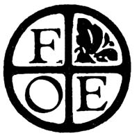

Friends of the Earth is one of the most effective environmental groups in the world today. Although FOE publishes its own journal-a monthly tabloid called Not Man Apart -far too few of MOTHER's readers regularly see a copy of NMA... which is why we've agreed to publish this column, written by the FOE/NMA staff.
Between 1946 and 1966, approximately 50,000 fifty-five-gallon barrels filled with low-level radioactive wastes (contaminated clothing, machinery, experimental animals, etc.) were dumped at two sites in the Pacific Ocean, off San Francisco. Now-after inspection of the sites by the Environmental Protection Agency-it appears that many of these barrels are leaking.
Tests of sediments taken from the area show plutonium concentrations 25 times higher than would have been expected on the basis of "normal" atmospheric fallout. In addition, underwater photographs taken at one dumping site show that one-fourth of the 150 barrels in that vicinity had imploded due to the extreme pressure at that depth.
To complicate matters, the EPA has recently learned of a third (previously unknown) dumping site-used by the Navy in 1946-near the Bay Area. Just how much radioactivity the Navy deposited in this area, no one knows: records documenting the dumping have vanished from the National Archives branch where they were stored.
On a grim note, Congressman Leo Ryan (D-San Mateo, Calif.) points out that the San Andreas fault lies within a few miles of the waste disposal sites, and that an earthquake might hasten the release of radioactivity from the already leaky barrels.
The last pipe is in place, the welds are nearly done (depending on how you look at it), and Alaskan oil is scheduled to flow through the now (in)famous pipeline by the middle of this year. Trouble is, nobody's sure yet where all that "black gold" is headed.
Standard Oil of Ohio owns about 50% of the petroleum that will flow through the gargantuan pipe ... but Sohio has no refineries (and few-if any-markets) on the West Coast. And they have no way of getting it to the Midwest, where most of their markets are.
Lately, there's been talk of selling Alaskan oil to Japan (which was expressly forbidden in the pipeline authorization act), or-alternatively-building still more pipelines to connect Alaska with the Midwest. (There's even been some talk of shuttling the black goo-via tankers-through the Panama Canal to the East Coast.)
Cynics have said all along that selling the oil to Japan was what the petroleum companies wanted to do in the first place, Operation Independence notwithstanding. And it's now beginning to look as if corporate maneuvering may indeed be putting Congress in a position where it'll have to change the law for the oil companies' convenience. (If they do, it won't be the first time that it's happened.)
Tørbjorn Fålldin-who was elected Prime Minister of Sweden last fall after running a vigorously anti-nuclear election campaign-is now reneging on his campaign promises. The Prime Minister has proposed legislation that would [1] ensure continued operation of Sweden's five existing nuclear reactors, [2] approve the issuance of an operating permit for the now-under-construction Barseback reactor (which he flatly promised not to do), [3] authorize the construction of four new reactors, and [4] guarantee construction loans.
Part of the problem (as far as we can make out) is that Fålldin was elected as one member of a coalition ... and the others in the alliance are fervently pro-nuclear. So to retain his personal power, the Prime Minister is having to go along with the wishes of his allies.
To quiet-if not stifle-the critics, Fålldin has proposed tough waste regulations.
One reason the U.S. faces an ever-growing solid waste problem is that public officials just don't like to think about sewage disposal. The situation is a little different in California, however, where members of the Golden State's new Office of Appropriate Technology are currently conducting a study of alternative waste treatment systems (such as those that employ methane generators or composting toilets).
Sim Van der Ryn-the head of California's OAT-has designed a composting toilet himself and is interested in hearing from others who've worked on and/or are living with dry toilet setups (especially in rural areas), so that his office can take steps to legalize such devices in California. (Waterless toilets are outlawed by the state's existing health and building codes.)
So: If you've installed an alternative waste disposal system in your home, why not write to Mr. Sim Van der Ryn (Office of Appropriate Technology, P.O. Box 1079, Sacramento, Calif. 95805) and tell him about it? Your name and address-we're told-will be held in strictest confidence.
The U.S. General Accounting Office has discovered that over a four-year period, the Interior Department's Indian Health Service authorized the sterilization of 3,400 native American women who didn't know-and hadn't consented to-what was being done. (Tragically, thirty-six of the women were under 21 years of age.) South Dakota Senator James Abourezk-who asked for the GAO investigation-commented: "Given the small American Indian population, the ... figure would be comparable to sterilizing 452,000 non-Indian women in the United States."
Japan's Ministry of International Trade and Industry-concerned about the country's rapid use of scarce and costly raw materials-has proposed legislation that would make recycling (on both industrial and household levels) mandatory. The island country currently generates more than 1.3 billion tons of waste per year .... Recombinant DNA research (see MOTHER NO. 42, pages 137-138) continues to draw the attention of scientists and lay persons alike. Science magazine ($2 per issue or $50/52 issues from the American Association for the Advancement of Science, 1515 Massachusetts Ave. N.W., Washington, D.C. 20005) has announced it will devote its entire April 8, 1977 issue to the subject .... The town of Wilton, Maine will open its new solar-heated sewage plant soon. Three different types of solar collectors will be used to provide 95% of the facility's heat and 20% of its total energy requirements .... The Japanese Federation of Bar Associations-Nichibenren-is calling for a moratorium on the construction of new (and the operation of existing) nuclear power plants until a thorough study of the plants' safety is done. Nichibenren's own year-long study of nukes concludes that the public has been misled about possible dangers...
To become a member of Friends of the Earth-and receive their excellent publication, Not Man Apart, year round remit $20 to FOE at 529 Commercial St., San Francisco, Calif. 94111.- MOTHER.
|
 |
|
|